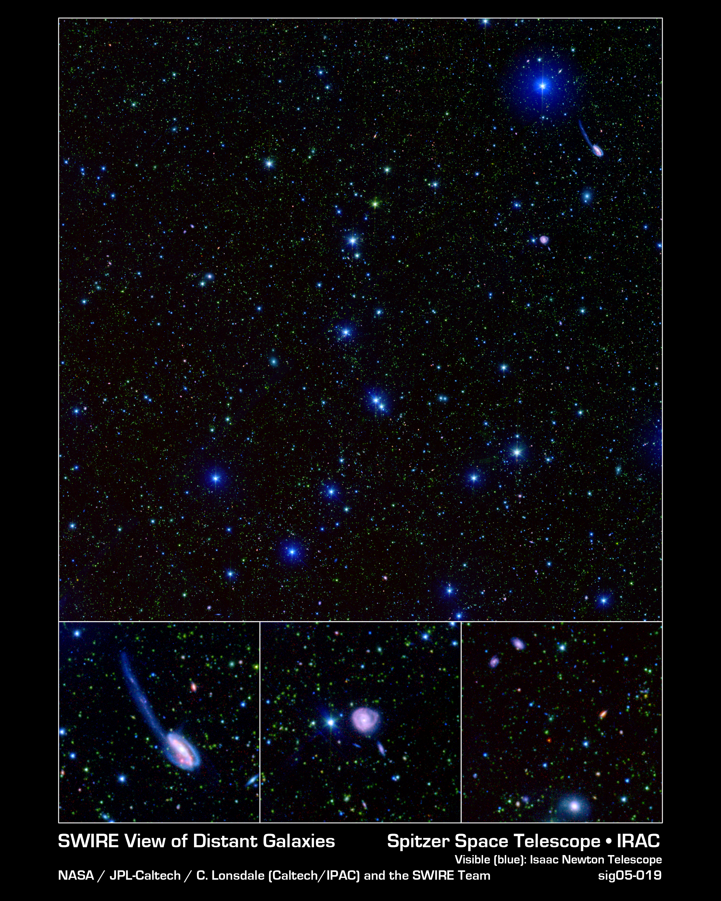

Executive Summary
Dozens of different telescopes have photographed the same patch of sky, over and over. Every survey left its records behind under its own source extraction, its own astrometric solution, its own photometric convention, its own flag definitions and its own file format. A short data paper posted to arXiv on September 16 gathers those records object by object into a public database. This article looks at the rules underneath that merge.
The database holds 4.4 million sources across 65 square degrees, with measurements running from the far ultraviolet to the far infrared. The number worth watching is not the source count but the radius. The distance that decides whether two detections belong to one object changes band by band, set at 1 arcsecond in the shorter infrared bands and opened out to 12 arcseconds at the longest. A telescope draws a blunter point as the wavelength grows. One step had to be finished before any of those numbers came into play: every input catalog is registered against the 2MASS frame first, which strips out the systematic offsets between frames. Without that correction, the paper states, the reliability of cross-identification at a fixed radius is limited by exactly those offsets.
Sections 1 through 5 follow what this paper, its companion paper and the release documents actually say. Section 6 carries the same decisions across to enterprise data, and that reading belongs to this article. Where the body adds an inference, it says so at the spot.
Key figures
Source: Vaccari, arXiv:2609.18694 (September 16, 2026)
4.4 million
sources merged into one record each
Eight fields, 65 square degrees. Far-ultraviolet through far-infrared flux sits on a single row
1″ → 12″
matching radius, widened by wavelength
1 arcsec at IRAC 3.6 and 4.5 μm, 12 arcsec at MIPS 160 μm. A factor of twelve
1″
one radius for every ancillary catalog
Ultraviolet, optical, near-infrared and far-infrared catalogs attach at the same radius, whatever the wavelength
2.8 million
sources in the deeper cut
The same procedure applied to 18 square degrees of SERVS imaging, as a companion product
A Sky Shot Over and Over Leaves Bookkeeping
Selection at mid-infrared wavelengths remains one of the most robust ways to assemble large samples of galaxies that are close to stellar-mass-selected, over wide areas and out to high redshift, because the correction applied for redshift is favorable there and varies slowly across much of the relevant range. That is the background to the extragalactic fields that the Spitzer Space Telescope swept with IRAC and MIPS during its cryogenic mission. Those fields, and the SWIRE fields above all, became reference laboratories for galaxy evolution, and ancillary data from the ultraviolet to the radio has piled up on the same sky ever since.
The paper writes that the richness comes at a cost. A single field is covered by dozens of independent surveys, and each survey carries its own source extraction, astrometric solution, photometric convention, flag definitions and file format. Building a coherent band-merged catalog for even one field takes substantial bookkeeping. That work gets duplicated across research groups, and it is rarely documented in enough detail to be reproducible.
So this database offers no new observation. Its claim is that pre-merged, astrometrically registered, versioned and citable multi-wavelength catalogs now exist, one per field, built with a uniform and documented procedure. Not one patch of sky here was newly photographed.
Eight fields, 65 square degrees in total. The six SWIRE fields (ELAIS-S1, XMM-LSS, CDFS, Lockman Hole, ELAIS-N1, ELAIS-N2), plus the Boötes field of the Spitzer Deep, Wide-Field Survey and the Spitzer Extragalactic First Look Survey (XFLS). The paper gives two grounds for that selection: the depth and breadth of the ancillary coverage, and the continuing prominence of these fields in Herschel, radio, Euclid and Rubin survey programs.

How Close Is Close Enough to Be One Object?
Band merging starts at the short wavelengths and proceeds outwards, and the radius at each step matches the angular resolution of that band. The 3.6 and 4.5 μm catalogs are associated with a 1 arcsecond radius, and those positions become the positional reference. The 5.8 and 8.0 μm catalogs then attach to those positions within 1.5 arcseconds, and the MIPS 24, 70 and 160 μm catalogs within 3, 6 and 12 arcseconds respectively.
Why the radius has to change from band to band becomes clear from how a telescope draws a point. At a fixed aperture, a longer wavelength smears the image wider, and the position of a source can be pinned down less precisely in proportion. The paper says only that the radii match the angular resolution and moves on. It does not count what breaks under a single uniform value, and with only two directions available, the outcome is worth working out. At the narrow end, 1 arcsecond carried out to the far infrared pushes pairs of detections that really are one object outside the cut, and the link breaks. At the wide end, 12 arcseconds applied in the near infrared folds unrelated neighbors into one object. Broken links can at least be counted afterwards. A wrong fold arrives as one clean row in the table, which makes it hard to notice.
In short, this database does not fix a list of objects. It fixes the scale that a verdict gets measured on. The physical limit of the instrument is pulled inside the criterion, so that the blurrier the instrument sees, the more generously it merges, and the sharper it sees, the stricter it gets.
The Ruler Comes First, the Radius Second
One step comes ahead of the radius numbers. Before merging, every input catalog is registered against 2MASS and pulled into a common astrometric frame. The method is plain. Median offsets in right ascension and declination are computed from high-significance detections, and those offsets are applied to the whole catalog. The systematic drift that each catalog carried against the others comes off along the way.
The paper states the purpose of that correction outright. Unless the systematic frame-to-frame offsets go away, matching at a fixed radius can be trusted only as far as those offsets allow. If the question is whether two detections sit within 1 arcsecond of each other, and the coordinate origins of the two catalogs already stand 0.5 arcseconds apart, the verdict measures the misalignment rather than the objects.
The order is the design. Alignment first, radius second. If that order flips, every number downstream loses its meaning. However finely the radius gets split by wavelength, when the ruler that carries the radius differs from catalog to catalog, the fineness is computed and never honored.
Nailing Down What Counts as an Object
One more decision sits on top of the radius and the frame. To enter this database, a source has to be detected at IRAC 3.6 μm or 4.5 μm. The paper writes that this requirement guarantees a homogeneous selection and good astrometric accuracy across the database. The positions of the sources chosen that way then serve as the positional reference for every match that follows.
The condition works as a quality bar and as a definition of the population at once. A source that misses both bands does not exist inside this database, however brightly some other wavelength recorded it. For anyone opening the catalog, that means learning what was never a candidate comes before learning what is inside. The rule appears in the first sentence of section 2.2 of the paper.
4.1The Rule Is Not One Rule
Here the rule forks once. The wavelength-dependent radii of the previous section apply only to band merging between IRAC and MIPS. Ancillary catalogs arriving from outside attach to the IRAC positions by nearest-neighbor matching within a homogeneous 1 arcsecond radius, whatever their wavelength. GALEX ultraviolet photometry, optical photometry from SDSS and from field-specific ground-based programs, near-infrared photometry from 2MASS, UKIDSS and VIDEO, and far-infrared photometry from Herschel PACS and SPIRE all follow that one rule. Photometric and spectroscopic redshifts ride on the same row. But the spectroscopic redshifts are not values this work measured.
So a rule that widens the radius with beam size and a rule that attaches far-infrared catalogs at 1 arcsecond sit side by side inside one database. The paper does not say why. Section 5 does hold something that reads like a clue. This database supplied prior positions for the deblending of Herschel maps, and a far-infrared list produced that way already comes out sitting on IRAC positions. On that reading, 1 arcsecond is less a radius for finding a new counterpart than a radius for confirming a value that is already in the same place. That connection is this article's reading, not a sentence the paper wrote.
4.2The Redshift Column Comes From Another Merge
The spectroscopic redshifts on that row come from a merge one layer down. Their source is the Spitzer Spectroscopic Data Fusion, released four months earlier by the same author. It is a collection of merged spectroscopic redshift catalogs covering fourteen extragalactic fields, and the names of all eight fields in this photometric database appear in that list of fourteen. The fields there were selected to match the Spitzer coverage of the corresponding field, so that cross-referencing with the photometric database stays seamless.
The merging rule in that collection has a different grain. Up to a point it runs close to this database: in each field, every publicly available spectroscopic redshift catalog from NED, VizieR, survey team releases and observatory archives is gathered and merged positionally within a 1 arcsecond radius. The next step parts ways. The catalogs go into a ranked priority order, defined separately for each field, with NED held at rank one by convention. The redshift from the highest-ranked catalog that has a measurement goes into the column ZBEST. Which value to treat as representative, when one source carries several measurements, is settled in advance as a rule.
That paper attaches a caveat to its own representative value. ZBEST does not necessarily represent the most scientifically optimal redshift for every use case. NED, the catalog held at rank one, is itself an aggregate of heterogeneous measurements of varying quality, so anyone doing precision photometric redshift calibration is told to pick redshifts from specific high-quality surveys instead. The warning that a default is not the best answer came from the person who built the default.
4.3The Same Procedure on a Deeper Sky
The procedure runs once more. The companion product, the SERVS Data Fusion, applies the same method to the deeper 3.6 and 4.5 μm imaging that SERVS obtained during the Spitzer warm mission, and delivers 2.8 million IRAC-selected sources over 18 square degrees. The sky narrows, the depth grows, and the rules of the verdict stay put. Because the procedure was fixed in a document, the same procedure could run again on new input.
The Column Name Records Where the Value Came From
The product is one FITS binary table per field, all of them inside a single ZIP archive, 2.0 GB for the DR1 release of 28 July 2023. The design worth noticing lives in the column names. Each name encodes the originating survey and band, so that the provenance of every measurement is explicit in the table itself. Value and lineage do not travel separately.
The spectroscopic redshift collection from section 4.2 pushes the same principle a step further. Next to the representative ZBEST sits ZFLAG, which identifies the catalog that supplied it, and the per-catalog redshifts that lost the ranking stay in the same table rather than getting deleted. The design lets a user set the default priority order aside and choose again by their own criteria. The distributed archive carries the per-survey input catalogs along with the merged result.
One more column. ZWHERE encodes as a bitmask in how many and which contributing catalogs each source received a measurement. With that column, a user can pull out the sources with redundant measurements and assess systematic offsets between surveys, which is the same species of misalignment that the 2MASS registration in section 3 takes out. Redundancy serves as a means of verification rather than waste.
The rest of the grounds for the verdicts sits in the README (AAAREADME.MAIN) that ships with the data. Which catalogs contributed, what the matching radii were, which astrometric corrections were applied, and what to watch for field by field are written in that file. The decisions from the earlier sections travel out with the release, rather than living in code or in one person's memory. This note is also not the first document to describe the procedure. The citation the paper attaches to its uniform and documented procedure is a 2015 conference proceeding, DR1 came out in July 2023, and this note arrived in September 2026. The rules were there before the data, and the data was there before this note.
Archiving and citation sit on the same line. The database is on Zenodo under a concept DOI, so that one address always resolves to the most recent version, DR1 is pinned at a separate DOI, and CDS/VizieR serves it as catalog II/377. One line does cut across the public access. The Zenodo record includes a selection of the data products, and the full database is available from the site the author runs. STILTS and TOPCAT are named as the merging tools.
The products outside the archive carry addresses of their own. The MIPS 24 μm maps and catalogs and the 70 and 160 μm products come from separate addresses, and the SERVS IRAC12 catalogs and the photometric filter database used for calibration each carry a DOI. The lineage does not stop at the column name. The material used to calibrate a value got a citable address too.
The database has already been put to work in several places. It provided the parent samples and multi-wavelength photometry for infrared luminosity function analyses, and training and validation sets for photometric redshift estimation of large infrared-selected samples. Within the Herschel Extragalactic Legacy Project it contributed prior positions for the deblending of Herschel maps and ancillary photometry for the calibration of photometric redshifts across multiple fields. Looking ahead, five of the eight fields are Euclid Deep or Auxiliary fields or Rubin Deep Drilling fields, and all eight are targeted by radio continuum surveys with LOFAR, GMRT and MeerKAT and by spectroscopic campaigns with 4MOST, MOONS and PFS. The database is built to supply the mid-infrared anchor, the prior source lists and the photometric redshift training sets that those surveys will need.
Why Pebblous Is Watching This Catalog
From here on, this article leaves the paper and looks again from the side of people who handle data. In words from outside astronomy, the problem this paper actually solved is record linkage. Given observations that different instruments left under different conventions, someone has to decide how far the record of one object extends. The question Pebblous has held onto for years has the same shape. Which value came from where, passed through what, and now sits on this one row.
The thing to look at closely is not how this paper set its criteria but the order it set them in. First the coordinate frames line up, then the definition of what counts as one record gets nailed down, and only after that does the radius for the verdict split by band. All three then went out with the release. In the table below, the left two columns come from the paper, and the right column is this article's reading carried over to enterprise data.
| The decision in the paper | The failure it blocks | The same slot in our data |
|---|---|---|
| Set a different matching radius for each band | Measuring observations of unequal resolution with one ruler | A match criterion that differs by source system. Data of unequal accuracy does not get merged at one threshold |
| Register coordinates against 2MASS before merging | Measuring distances on top of frames that do not line up | Standardizing shared keys such as address, business number and time zone. That work has to finish before any verdict |
| Require detection in two IRAC bands for entry | Letting the definition of one record drift | Naming a system of record. Which system an entity must appear in to count as one record gets decided first |
| Stamp the originating survey and band into the column name | Letting the source come loose from the value | Keeping source identifiers on merged output. Even after the merge, which record a value came from stays traceable |
| Ship the radii and corrections in a README | Leaving the criteria in one engineer's head | Documenting and versioning the matching rules. The date a rule changed, and why, travels with the data |
In enterprise data the row that collapses most often is the last one. On the astronomy side, a single author wrote the radius numbers and the astrometric corrections into a README and shipped it, which leaves everyone else free to disagree with the verdict. Our own criteria for merging the same customer, the same part, the same patient are usually not written down that far. When the fields that must agree before two records count as one person, the reason the similarity threshold sits at 0.9, and the date someone raised that value all live inside pipeline code, anyone who later wants to review the verdict has to work backwards from the results.
The way one value gets chosen out of several is worth carrying over too. The redshift collection in section 4.2 raises a representative value and keeps, in the same table, which catalog supplied it and which catalogs saw the same source. When enterprise data builds a golden record, the winning value usually survives alone while the candidates and the grounds for the choice disappear. Anyone who later doubts that record has to reconstruct what it was chosen between. This comparison is this article's reading, not something the paper said about enterprise data.
A boundary belongs here as well. Matching objects in the sky runs on a single scale, the distance between two coordinates, while merging people or companies adds axes that never convert into distance, such as name spelling, typos, name changes and corporate splits. One radius does not settle that problem. Something still carries over: splitting the scale used for a verdict to fit the character of the data, and sending that scale out with the product.
Teams that merge data may find these six questions worth asking.
- Can you write in one sentence what makes our pipeline call two records the same entity?
- Does that criterion vary by source system, or does one threshold cover data of very different accuracy?
- Is there a separate step that standardizes keys and spellings before the verdict? Without it, what exactly is the distance you are measuring?
- Has a system of record been named for what counts as one entity? What happens to entities absent from that system?
- When the same attribute holds different values across sources, is the priority for choosing the representative one written as a rule? Where do the values that lost end up?
- After the merge, can each value still be traced back to the record it came from? Without that, a wrong merge cannot be fixed either.
Thank you for reading this far. Every figure and sentence quoted here can be checked against the paper on arXiv, and the database itself sits on Zenodo and in CDS/VizieR as catalog II/377. We would be glad to hear who decides what counts as the same entity in your organization, and on what grounds.